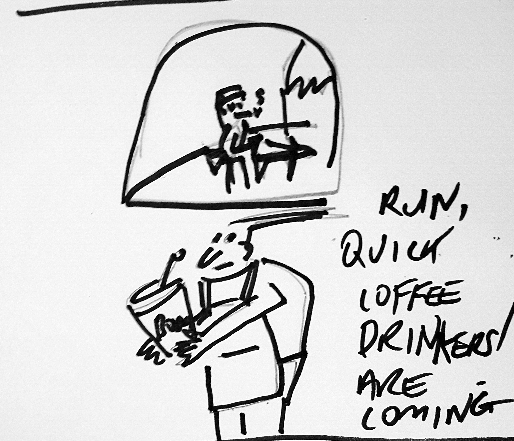

issues/boba-side-issue17.png. Ad slot stays a plain "Your Ad
Here" placeholder; no advertiser lined up this issue.
Business · Markets
Everyone told me nothing gold stays. I told Judy gold was never the position I was in. Marshall sat by the door same as always, unimpressed by a number moving exactly the direction I said it would three weeks ago at a dinner nobody else understood the stakes of. I closed a day later than planned, for reasons that had nothing to do with the market and everything to do with a call I didn't want to take at the open. Judy didn't ask this time either.
Technology
This week, a bubble tea counter three blocks from here started taking orders by tapping a phone against a reader instead of speaking them aloud. That is the plain fact. Everything about how you order tea just changed forever. For decades, humanity has been trapped by the spoken word. Today, that ends. This isn't a reader. It's a statement about what's possible when you stop asking permission to stay silent. One more thing: it beeps twice, not once. Insanely great.
Weather · Epic Forecast
Four days running above twenty, a real spring stretch instead of the one-afternoon tease we've had all month. I know I said this exact thing three weeks ago and got rained on for it. I'm saying it again anyway, because the pattern actually holds this time, and because someone in this job has to occasionally be an optimist out loud. Pack the sunscreen. Keep the jacket in the car, not on your back.
Bubble Tea Trivia · Did You Know?
A proper brown sugar boba's stripes come from hot syrup swirled inside the cup before pouring, a specific barista technique, not just syrup dumped into a finished drink.
"I have studied real power long enough to recognize it wearing a gardening hat."— Richard Nixon, The Silent Majority Report, on the street's unofficial bin committee
Joke of the Week
Why did the tapioca pearl start a band? It really knew how to drum up a following.
Reach Miro Street's bubble tea regulars for less than the price of a large taro. bubbletea.nz/advertise
The Silent Majority Report
There exists, on this street, a committee that convenes without an agenda, adjourns without a vote, and somehow arrives at a unanimous decision every single time regarding whose bin goes out wrong. I have studied real power long enough to recognize it wearing a gardening hat. Nobody elected this committee. Nobody could unseat it either, a distinction I understand rather better than most men who have actually held office.
Books · The Duckworth Scale
This week's pick promised a twist by chapter three. We are, as of my last reading session, five chapters deep, and the twist remains theoretical, a rumor the book tells about itself. I have suffered worse pacing personally and professionally, usually at the end of a very short fuse. Two more chapters. If nothing happens I'm blaming the author directly, by name, in the sequel to this review.
Puzzle of the Week
Last issue's question, resolved: Dev didn't earn gold, and Mei's tier sat one rank above Priya's. Only Priya = silver, Mei = gold clears both clues, leaving Dev at bronze. Mei earned gold.
Three market stallholders (Isla, Noah, Rhea) sold out of their jam in a different order this morning: first, second, third.
Brisk one this week · who sold out third? Answer next week — Ken Endo
Sport · Reading The Water
Their point guard's dribble got half a beat lazier every trip down in the fourth, the same tell I used to clock in a swimmer's stroke count before the fatigue actually showed on the clock. Nobody called it from the bench. I called it from row four, out loud, to nobody in particular, the way I always do. Final buzzer proved it right by eleven points.
Domestic Desk
Bin night came and went without incident, the recycling correctly sorted from the rest for the first time in recent memory Sebastian can summon. He remembers other bin nights, less orderly ones, ones that ended in a dispute over a single incorrectly sorted jar. He remembers, more precisely, that none of it mattered nearly as much at the time as it felt like it did.
Ask the Captain
"I said yes to too many things this month and now I'm exhausted. How do I say no without feeling guilty?" Aye, lad, no ship sails well overloaded, no matter how willing the crew. Ye said yes so often the hold's sitting below the waterline. Saying no now isn't unkindness, it's seamanship. Unload what ye can before ye take on open water again. Fair winds.
In Memoriam
The free-drink threshold, ten stamps for as long as anyone here can recall, was quietly raised to twelve this week, no announcement, no ceremony, just a number that used to mean something meaning slightly less. I confess nothing about the four customers who noticed immediately and said so at volume. Mourn the threshold if sentiment moves you toward numbers. I remain, as ever, unbothered by inflation of any kind that isn't my own.
Reflections
The delivery route was rebuilt this month, every stop reshuffled for efficiency, and somehow it still passes the old address first, same as it always has. Nobody who built the new route knows why. Wren has stopped checking whether it means anything and started simply noticing that it happens, which is, some days, the closest thing to an answer it gets.
The Boba Side · Returns
